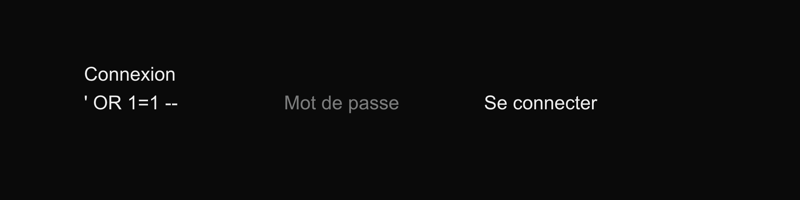
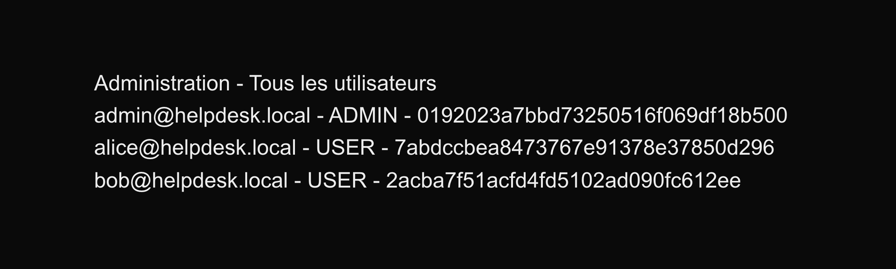
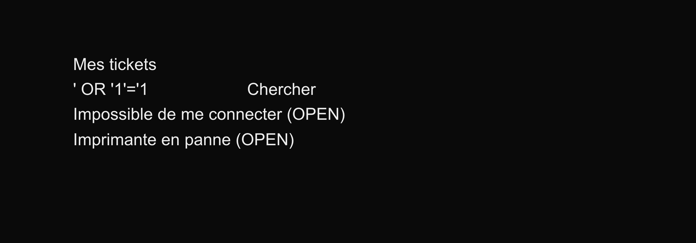

Application web de helpdesk (gestion de tickets d'assistance) construite volontairement vulnérable
pour pratiquer la sécurité web des deux côtés : attaquer, puis défendre.
Elle existe en deux versions : une version vulnérable contenant des failles classiques du Top 10 de l'OWASP,
et une version corrigée (branche fixed) où chaque faille est réparée.
Chaque faille est documentée dans un writeup selon le même plan : repérer → exploiter → corriger.
La requête de connexion est construite en concaténant l'email saisi dans une chaîne SQL.
En entrant ' OR 1=1 -- comme email, la vérification du mot de passe est mise en commentaire
et on se retrouve connecté en tant qu'administrateur, sans aucun mot de passe.

Les failles se combinent : un simple utilisateur accède à la page admin (contrôle d'accès cassé), y récupère les hash MD5 de tous les comptes, puis retrouve les mots de passe en clair en quelques secondes. La même erreur de concaténation SQL permet aussi d'afficher les tickets de tout le monde depuis la barre de recherche.


httpOnly, secure, sameSitedangerouslySetInnerHTML)⚠️ Application destinée à un usage local et éducatif uniquement.
Le code et le writeup complet sont disponibles sur GitHub :
Voir sur GitHub